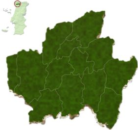

Lixei-me com F1

Dica: Não são nomes de cidades 🤭
Amares
Barcelos
Braga
Cabeceiras de Basto
Celorico de Basto
Esposende
Fafe
Guimarães
Póvoa de Lanhoso
Terras de Bouro
Vieira do Minho
Vila Nova de Famalicão
Vila Verde
Vizela